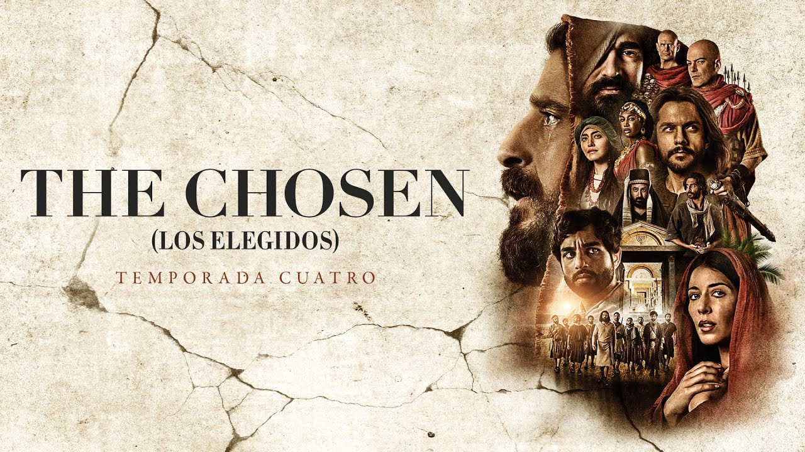

Un mensaje de esperanza
El Señor Jesús vendrá pronto para rescatarnos , llevarnos al Reino de Dios y a la vida eterna .
Morir en la cruz fue el acto de amor más grande del universo. Él murió por nosotros para perdonar nuestros pecados y salvarnos. .
¿Qué es realmente la Fe?
La Fe no se trata de:
- Religión
- Doctrinas
- Sectas
Se trata de una relación con Dios .

Lo que no somos
Y tampoco significa apagar tu mente. Creer en el Señor Jesús no está peleado con el sentido común, la ciencia o el pensamiento crítico.
No ignoramos la ciencia
Creemos que la ciencia descubre cómo funciona el mundo, pero la fe nos revela quién lo creó y con qué propósito.
No pedimos fe ciega
El mismo Dios que nos dio la capacidad de razonar y cuestionar, espera que la usemos para buscar la verdad con un corazón dispuesto.
No somos jueces perfectos
No estamos aquí para señalarte o creernos moralmente superiores. Todos cometemos errores, tenemos fallas y necesitamos perdón.
Conoce más
Si quieres conocer los inicios del evangelio del Señor Jesús aquí en la tierra , cómo llamó a sus discípulos , la historia de cada uno y sus primeras prédicas , te recomendamos ver la serie:
🎬 The Chosen (Los Elegidos) 🔗
Preguntas frecuentes
¿Dios existe?

Esta es una de las preguntas más importantes.
- El origen del universo: El universo tuvo un inicio.
- El ajuste fino: Las leyes físicas permiten la vida.
- La moral humana: Existe una noción del bien y el mal.
¿Por qué hay tanto sufrimiento?
El sufrimiento no es el deseo de Dios , sino consecuencia del mal y de las decisiones humanas .
¿Qué pasa después de la muerte?
Es un tema profundo. Según la fe cristiana, Dios es quien juzga y nuestras decisiones en vida tienen consecuencias eternas .
Versículo Destacado

Historias reales de transformación
Personas reales, con dudas reales, que encontraron respuestas inesperadas. Aquí tienes un adelanto de sus historias:
"Pasé años buscando errores en la Biblia para demostrar que la fe era un invento. No esperaba encontrar una verdad que transformaría mi caos en paz."
— Alejandro M., Ex-escéptico"Pensaba que la religión era solo para personas débiles. Hoy entiendo que se trata de una relación viva que restauró por completo mi vida y mi familia."
— Sofía R., Diseñadora¿Tienes dudas? Es completamente normal
Cuestionar, analizar y no estar de acuerdo en todo desde el principio no solo es válido, es parte del proceso.
No hay prisa por entender todo de inmediato ni se te pedirá que dejes tus preguntas en la puerta. Este es un lugar para explorar la verdad a tu propio ritmo, sin presiones.
NOTA IMPORTANTE
Esto no es una cita con una iglesia ni con el hombre, es con el Señor Jesús , nuestro salvador. Él te ama y te está esperando con los brazos abiertos .